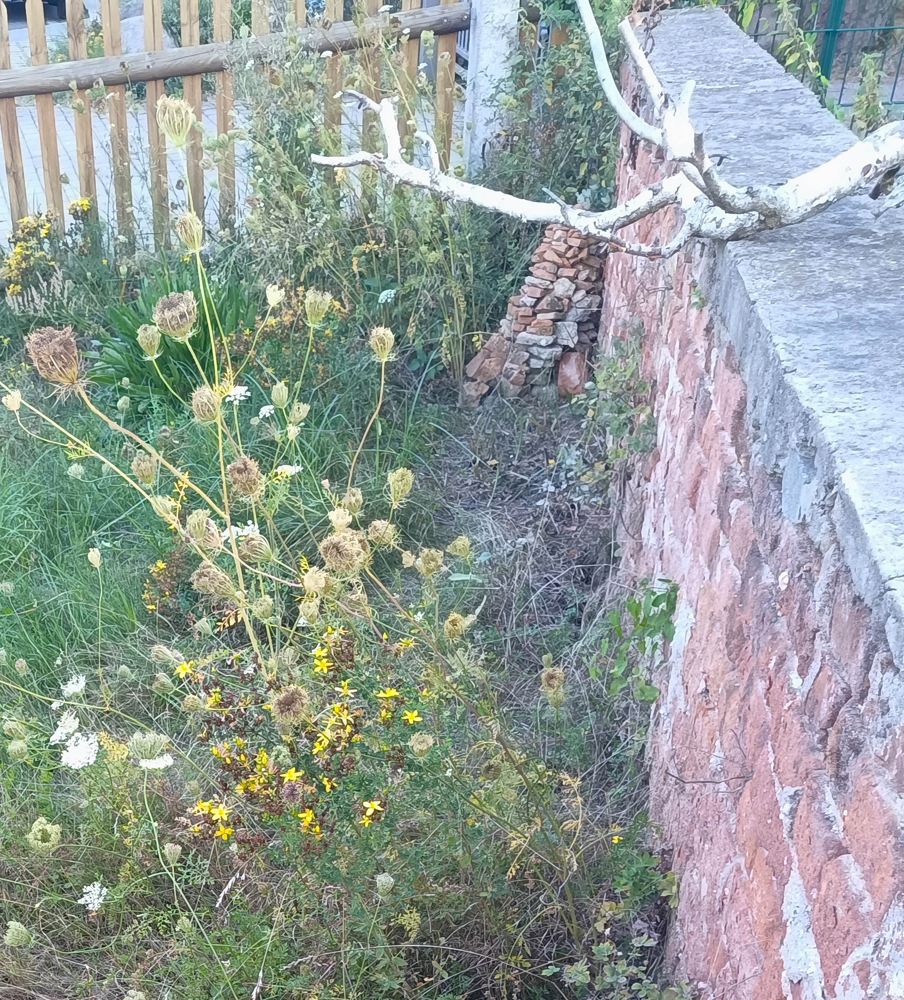

Gepflegte
Wildnis
Gepflegte
Wildnis
Fotoarchiv − August & Juli 2024
Hasen-Klee

Hauhechel-Bläulings-Weibchen auf
Färber-Hundskamille dahinter Wiesen-Glockenblume und Wilde Möhre
Eine Scherenbiene in Rapunzel-Glockenblume

Heuschrecken-Sandwespe auf Natternkopf lauernd
und auf Oregano saugend

Wespenspinne mit typischem Zickzack-Muster im Netz
(im Video einen Nachtigall-Grashüpfer einwebend)

Falter in 50 m-Umgebung (aber außerhalb des Biotops)
Spanische Flagge (auch Russischer Bär) auf Wasserdost

Schwalbenschwanz saugt
an Karthäuser Nelke

Kurzschwänziger Bläuling (weibl.)
auf Tomatenblatt
Kleiner Perlmuttfalter saugt
an Buddleja
Überblicksbilder

Fläche 8 Mitte August nach Mosaikmahd
von südlich der Fläche 9 aus

Neuer Ziegelsteinhaufen vor der Mauer
und Birken-Totholz-Deko